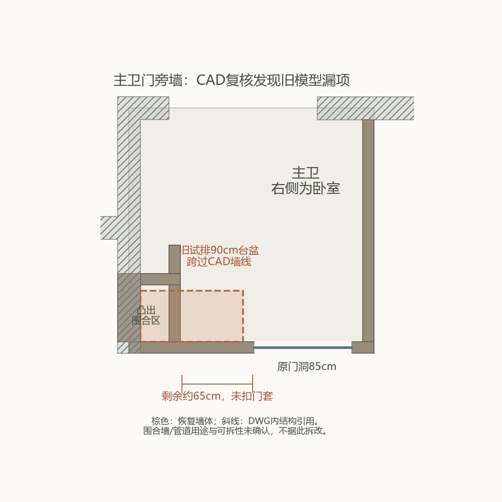

此前90cm台盆设想跨过了CAD围合墙，不能采用。门旁剩余约65cm尚未扣门套、饰面；如坚持此处，只能继续研究约55～60cm紧凑单盆，而非长台面。马桶排污位置仍须现场核实。

来源：13层对应 AX-6-BZC → AX-120-COMP-WALL；门洞对象246117，围合墙对象252123/252124/252691。已计入建筑嵌套100mm偏移，结构引用来自SX-06-WALL-BZC。诊断解析不是完整结构施工图，不构成拆改许可。
CAD家具洁具仅为示意：图中马桶在门旁左侧，旧网页把另一处占位称为“原马桶”不准确。厨房、卧室和外面2.5m衣柜不在本次局部修正范围内；坐式梳妆仍未定。
下一项决策：是否接受门旁紧凑台盆，再按修正后的墙体深化；不能为保留90cm宽度默认拆围合墙。